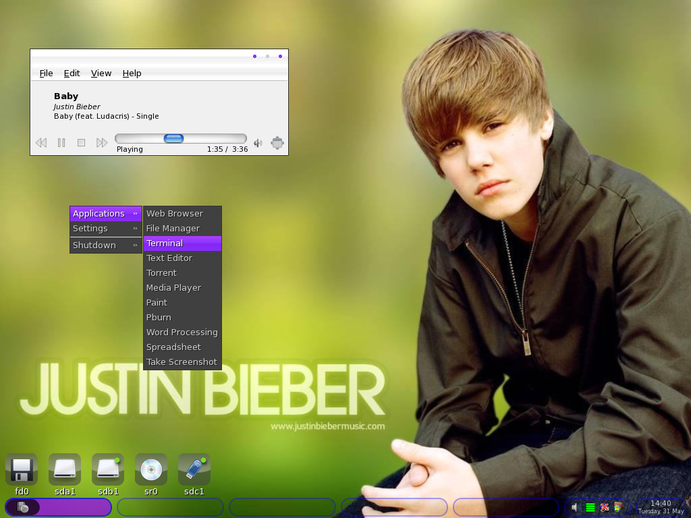

Hier wird sich mit weniger bekannten Betriebssystemen beschäftigt!
Berkeley Software Distribution Derivate
 FreeBSD
FreeBSD
FreeBSD ist zu Linux das, was Linux zu Windows ist. Mit unter 0.1% Desktop Marktanteil sieht man dieses Betriebssystem quasi gar nicht auf Desktops, dafür aber häufiger auf Servern. FreeBSD wurde erstmals 1993 veröffentlicht. Dieses Betriebssystem ist POSIX-konform und hat einen monolithischen Kernel
Mehr zu diesem Betriebssystem findet ihr hier:
https://www.freebsd.org NetBSD
NetBSD
Ein weiteres bekanntes BSD-Derivat, auch mit weniger als 0.1% Desktop Marktanteil. Die Hauptprämisse dieses Betriebssystems ist dass es überall läuft, daher auch der Slogan: „Of course it runs NetBSD“. Daher unterstützt es auch eine riesige Anzahl an CPU-Architekturen, die weit über den üblichen hinausgeht. Ähnlich wie FreeBSD ist auch dieses Betriebssystem POSIX-konform und hat einen monolithischen Kernel
Mehr zu diesem Betriebssystem findet ihr hier:
https://www.netbsd.orgDragonFly BSD
Obwohl dieses BSD-Derivat ähnlich unbekannt wie die anderen hier aufgelisteten ist, legt es dennoch besonders viel Wert auf Bleeding-Edge Technology. Das bedeutet dass viele APIs modernisiert sind und auch neue Sicherheitskonzepte sehr schnell aufgenommen werden. Außerdem verwendet DragonflyBSD Lightweight Kernel Threads. Das heißt, dass jeder Prozess einen eigenen Prozess-Scheduler bekommt, was hilft, den Wettstreit zwischen Prozessoren zu verringern. Allerdings bringt das nur was bei Systemen, die auch mehrere Prozessoren haben. Dieses Betriebssystem ist auch POSIX-konform und mit monolithischem Kernel ausgestattet.
Mehr zu diesem Betriebssystem findet ihr hier:
https://www.dragonflybsd.orgLinux Derivate
Hannah Montana Linux
Diese Linux Distribution ist eher eine art Scherz als eine ernstzunehmende Distribution. Das Betriebssystem selbst kam 2008 raus und basiert auf einer mittlerweile sehr veralteten Version von Kubuntu, nämlich Kubuntu 9.04 (Das neueste ist 25.04), und verwendet KDE Plasma 4.2 (Das neueste ist KDE Plasma 6). Unter der Haube ist es aber nur ein veraltetes Ubuntu mit extra Dekorationen und natürlich Hannah Montana. Monolithischer Kernel und POSIX Konformität sind natürlich auch mit dabei, da es ein Linux Derivat ist.
Mehr zu diesem Betriebssystem findet ihr hier:
https://archiveos.org/hannah-montana/Justin Bieber Linux
Auch bekannt als „Biebian“ ist dies eine weitere sarkastisch gemeinte Linux Distribution. Obwohl der Name Biebian an Debian erinnert, basiert dieses Derivat tatsächlich auf Puppy Lucid 525. Justin Bieber Linux kam 2011 raus und ist mittlerweile leider auch veraltet. Dieses Derivat baut auf Openbox als Arbeitsumgebung mit ein paar Anpassungen, wie z. B einem Justin Bieber Hintergrund. Da es sich hier um ein Linux Derivat handelt ist monolithischer Kernel und POSIX Konformität mit dabei.
Die Arbeitsumgebung von Justin Bieber Linux
Mehr zu diesem Betriebssystem findet ihr hier:
https://biebian.sourceforge.net/Red Star OS
Wer sich mal intensiver mit Linux Distributionen beschäftigt hat, sollte dieses Betriebssystem kennen. Hier handelt es sich um Nordkoreas eigene Linux Distribution, gemacht für den Gebrauch innerhalb des Landes, um nicht von Windows abhängig zu sein. Als Basis nutzt Red Star OS Fedora und hat verschiedene, sehr interessante Sicherheitsmechanismen. Z. B hat Red Star OS ein „Antivirenprogramm“ was allerdings nur Dateien löscht wenn es ein bestimmtes Textmuster entdeckt. Das System schützt sich vor Manipulationen indem es ständig Prüfsummen überwacht, und, falls sich etwas verändert hat, den Computer neustartet. Linux, also monolithischer Kernel und POSIX-konform.
Mehr zu diesem Betriebssystem findet ihr hier:
https://archiveos.org/redstar/Extras
Temple OS
TempleOS ist ein sehr spezielles Betriebssystem was keine Basis hat. Es wurde von Terry A. Davis alleine geschrieben, angeblich im „Auftrag Gottes“. Das Betriebssystem unterstützt nur 640x480 Bildschirmauflösungen und mit 16 farbener Grafik, laut Davis seien das „heilige Features“. Wichtig zu wissen ist dass Terry A. Davis schizophren war und seine manischen Episoden für Offenbarungen Gottes hielt. Was auch interessant ist an diesem Betriebssystem, ist dass es ein reines Ring-Zero Betriebssystem ist, das heißt dass wirklich alles, nicht nur Kernel, sondern auch Nutzeranwendungen, im Ring 0 laufen. Der Kernel ist monolithisch aber von POSIX Konformität ist hier nicht zu sprechen, da es eine eigene Programmiersprache namens Holy-C nutzt.
Mehr zu diesem Betriebssystem findet ihr hier:
https://www.menuetos.net/index.htmMenuetOS
Ein weiteres eigenständiges Betriebssystem, komplett in x64 und x86 Assembliersprache geschrieben, was heißt, dass es extrem schnell ist weil sehr weniger Abstraktion vorhanden ist durch die sehr Hardwarenahe Programmiersprache. Die erste Version wurde 2000 von Ville M. Turjanmaa geschrieben. Als er sah, dass die ganzen Skriptingsprachen seiner Zeit so viel Rechenleistung verlangten, wollte er ein Betriebssystem, dass so effizient wie möglich ist. MenuetOS ist außerdem so designt, dass es auf eine 1.44MB Floppydisk passt. Interessant ist auch, dass das grafische User Interface von der CPU berechnet wird, was Grafikkarteninkompatibilitäten verhindert. Der Kernel ist monolithisch, aber hier gibt es keine POSIX Konformität.